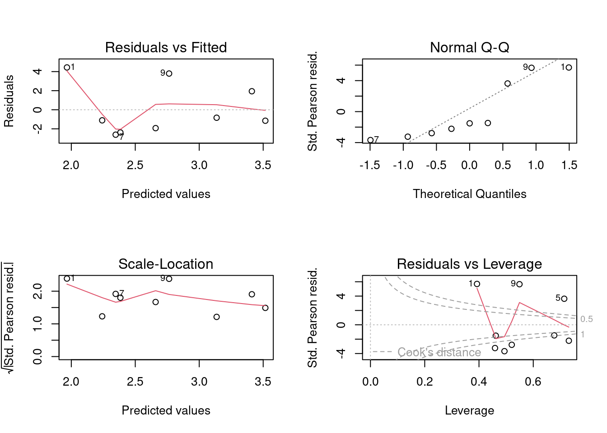
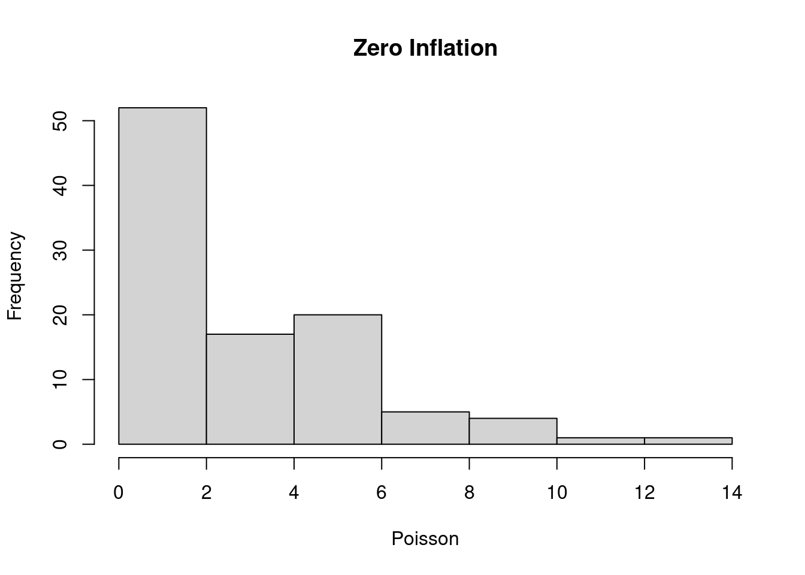

10 Multinomial Experiments
The simplest type of experiment that leads to categorical data is the multinomial experiment. A multinomial experiment consists of \(n\) identical trials. The outcome of each trial falls into one of k categories or cells. The probability that the outcome of a single trial will fall in a particular cell, say, cell i is \(p_i\) , where \(i = 1, 2, \dots , k\), and remains the same from trial to trial. Note that:
\[p_1 + p_2 + p_3 + \dots + p_k = 1\] (This is an example of the Law of Total Probability (LOTP). In the end, all the probabilities in a problem have to sum to one. Remembering this rule can help you solve many statistical problems.)
In a multinomial experiment, the trials are independent. We are interested in the \(n_1, n_2, n_3, \dots, n_k\) where \(n_i\) for \(i=1,2, \dots, k\) is equal to the number of trials which the outcome falls into cell \(i\). Note that \(n_1+n_2+n_3+ \dots +n_k=n\) The experiment can be modelled using a multinomial distribution with probability mass function: $
\[p(n_1, n_2, \dots, n_k)=\frac{n!}{n_1!n_2 \dots n_k!}p_1^{n_1}p_2^{n_2} \dots p_k^{n_k} \] ## Pearson’s \(X^2\) test
[Karl Pearson (1857-1936)]{Karl_Pearson.jpg}
The \(X^2\) test was proposed in 1900, and can be used for testing hypotheses about \(p_1, p_2, p_3, \dots, p_k\) Suppose that \(n=100\) balls were thrown into \(k\) boxes. Further suppose that \(p_1=0.1\). What would the expected number of balls in box 1 be? This would just be \(E(n_1)=np_1=(100)(0.1)=10\) Similarly for the other boxes, we have: \(E(n_i)=np_i, i= 1, 2, \dots, k\)
Suppose we postulate values for the \(p_i\)s. If our hypothesis is correct, the \(n_i\)s should not depart much from the expected values (remember residuals in regression? This is the same principle.) Hence it seems reasonable to use the deviations from the expected values in a test statistic: \(n_i-np_i, i=1 ,2, \dots, k\)
The test can then be constructed as:
\[\displaystyle X^2=\sum_{i=1}^k\frac{(n_i-np_i)^2}{np_i}=\sum_{i=1}^k\frac{[n_i-E(n_i)]^2}{E(n_i)}\] Asymptotically (for large \(n\)), \(X^2\) follows a \(\chi^2_{\nu}\) distribution with \(\nu\) degrees of freedom. The \(\chi^2\) distibution as Probability density function
\[f(y)=\frac{(y)^{\nu/2-1}e^{-y/2}}{2^{\nu/2}\Gamma(\nu/2)}, y > 0\] It’s easier to visualise the \(\chi^2\) distribution:
library(ggplot2)
ggplot(data.frame(x=c(0, 80)), aes(x)) +
stat_function(fun = function (x) dchisq(x, df = 1), geom = "line", aes(colour = "1")) +
stat_function(fun = function (x) dchisq(x, df = 5), geom = "line", aes(colour = "5")) +
stat_function(fun = function (x) dchisq(x, df = 50), geom = "line", aes(colour = "50")) +
ylab("Density") +
scale_colour_manual("Degrees of Freedom", values=c("black", "red", "blue"),
breaks=c("1", "5", "50"))
10.1 Example 1. Specified Cell Probabilities
Frequently we know what the cell probabilities (the \(p_i\)’s) should be, based on a scientific theory. For example, Mendelian genetic theory predicts that peas falling into the following classes are distributed 9:3:3:1 with the following phenotypes: Round/Yellow, Wrinkled/Yellow, Round/Green, Wrinkled/Green. Say, N = 100 peas are examined, with the following counts:
counts <- c(56, 19, 17, 8)
names(counts) <- c("RY", "WY", "RG", "WG")
counts## RY WY RG WG
## 56 19 17 8\end{itemize} \end{itemize} \end{frame}
ratio <- c(9, 3, 3, 1)
p <- ratio / sum(ratio)
expected <- sum(counts) * p
x2 <- sum((counts - expected)^2 / expected)
x2## [1] 0.6577778pchisq(x2, df=3, lower.tail=FALSE)## [1] 0.8830872Because the expected proportions come from theory, and not the data themselves, we do not lose any degrees of freedom apart from the restriction that \(n_1+n_2+n_3+n_4=100\). Therefore there are \(k-1=4-1=3\) degrees of freedom. Hence, because the p-value is >> 0.05, we do not reject the null hypothesis that the peas follow the Mendelian model. Of course, we can easily do this using the built-in chisq.test() function in R:
chisq.test(counts, p = ratio, rescale.p = TRUE)##
## Chi-squared test for given probabilities
##
## data: counts
## X-squared = 0.65778, df = 3, p-value = 0.883110.2 Example 2: Goodness-of-fit
The \(X^2\) test is also useful for testing whether data are consistent with a particular probability distribution. The idea is to use \(X^2\) to measure the fit of the probability model to the data. Significant lack of fit implies rejection of the null hypothesis of no departure from the model. For example, the Poisson distribution is often used to model “count” data. Consider the following data:
dat <- data.frame(birds=0:5, frequency=c(16, 19, 9, 4, 2, 0))
dat## birds frequency
## 1 0 16
## 2 1 19
## 3 2 9
## 4 3 4
## 5 4 2
## 6 5 0Note that birds = 5 really means 5 or greater. The expected number of birds per site is just:
\[ \hat{\lambda}=\frac{(0)(16) + (1)(19) + (2)(9) + (3)(4) + (4)(2)}{16 + 19 + 9 + 4 +2 }=1.14 \] Aside: Note that the numerator consists of additions and multiplications. This strongly suggests that we could summarise the numerator by using vector multiplication:
lambdahat <- with(dat, (birds %*% frequency) / sum(frequency))
lambdahat## [,1]
## [1,] 1.14The cell probabilities are just: \[\begin{align*} p(y \mid \lambda) &= \frac{\lambda^y e^{-\lambda}}{y!}, y= 0, 1, 2, \dots \\ p_0 &= e^{-\lambda} = 0.3198 \\ p_1 &= \lambda e^{-\lambda} = 0.3646 \\ p_2 &= \frac{\lambda^2e^{-\lambda}}{2} = 0.2078 \\ p_3 &= \frac{\lambda^3e^{-\lambda}}{6} = 0.0790 \\ p_{4+} &= 1 - p_0 - p_1 - p_2 - p_3 = 0.0288 \; \text{(LOTP)} \end{align*} \] The expected values for each cell are just: \[ \begin{align*} E(n_0) &=(50)(0.3198)=15.9910\\ E(n_1) &=(50)(0.3646)=18.2297\\ E(n_2) &=(50)(0.2078)=10.3909\\ E(n_3) &=(50)(0.0790)=3.9486\\ E(n_{4+}) &= (50)(0.0288)=1.4399 \end{align*} \] Note that \(E(n_3)\) and \(E(n_{4+})\) are both \(< 5\). The \(X^2\) approximation to the \(\chi^2\) distribution is unreliable for such low values. Hence, we should pool these last 2 categories: \(E(n_{3+})=3.9486+1.4399=5.3884\) And we now have \(k=4\) categories. We now have to Calculate \(X^2\): \[ \begin{align*} X^2&=\sum_{i=1}^k\frac{(n_i-np_i)^2}{np_i}\\ &=\sum_{i=1}^k\frac{[n_i-E(n_i)]^2}{E(n_i)}\\ &= 0.2882\\ df &= k-1-1=4-2=2 \\ p&=\chi^2_2(0.4373)=0.8658 \gg 0.05 \end{align*} \] Therefore we do not reject the null hypothesis that the data come from a Poisson distribution. Here is the above analysis in R:
probs <- c(dpois(0:2, lambdahat), 1-sum(dpois(0:2, lambdahat)))
probs## [1] 0.3198190 0.3645937 0.2078184 0.1077689pooled <- c(dat$frequency[1:3], sum(dat$frequency[4:6]))
pooled## [1] 16 19 9 6expecteds <- sum(pooled) * probs
X2 <- sum((pooled-expecteds)^2/expecteds)
X2## [1] 0.2881509pchisq(X2, df=2, lower.tail=FALSE)## [1] 0.865822410.3 Example 3: Contingency Tables
We can use the \(X^2\) test to analyse cross-classified tabular data. The most common use of \(X^2\) is a test of independence of rows from columns. ie a test of association between rows and columns}. Here’s and example:
| High input from Supervisor | |
|---|---|
| Supervisor 1st, Student mandatory 2nd | 19 |
| Student 1st, Supervisor mandatory 2nd | 19 |
| Student 1st, Supervisor courtesy 2nd | 3 |
| Medium Input | Low Input | |
|---|---|---|
| Supervisor 1st, Student mandatory 2nd | 6 | 2 |
| Student 1st, Supervisor mandatory 2nd | 41 | 27 |
| Student 1st, Supervisor courtesy 2nd | 7 | 31 |
The data are numbers of published papers by students, cross-classified by the order of authorship and the input from the supervisor. Usually, the author order in biology is to have the student first, except when there is a high level of input from the supervisor. ie when the student is a low contributor to the study.
We need to estimate the expected values (under the null hypothesis) in each cell. This is done by multiplying the appropriate row and column totals and dividing by the grand total: \(\widehat{E(n_{ij})}=\frac{r_ic_j}{n}\). We can then use the usual formula for \(X^2\), with degrees of freedom \((nrow - 1)(ncol - 1)\). Here’s how to do it in R:
mat <- matrix(c(19, 6, 2, 19, 41, 27, 3, 7, 31), nrow=3, byrow=TRUE)
csum <- colSums(mat)
rsum <- rowSums(mat)
expecteds <- outer(rsum, csum) / sum(rsum)
X2 <- sum((mat - expecteds)^2 / expecteds)
X2## [1] 57.36176pchisq(X2, df = 4, lower.tail = FALSE)## [1] 1.038795e-11Therefore, we reject the null hypothesis. There is an association between authorship order and the amount of input by the supervisor. Of course, it is easy to use the chisq.test() function in R:
chisq.test(mat)##
## Pearson's Chi-squared test
##
## data: mat
## X-squared = 57.362, df = 4, p-value = 1.039e-1110.4 Assumptions of the \(X^2\) Test
- The data must satisfy the assumptions of a multinomial experiment (independent trials, constant cell probabilities etc.)
- Expected cell values should not be \(< 5\). In this case the asymptotic approximation to the \(\chi^2\) doesn’t hold. You can use other methods or use simulation (See
?chisq.test) - The degrees of freedom for a contingency table = (r-1)(c-1)
10.5 Loglinear Models
Another approach, which works well for multiway tables, that is, tables with greater than 2 dimensions is the technique of log-linear modelling. Here is the 2-way table described above, analysed using a loglinear model. Notice that the loglm function has a formula argument that looks very similar to the formula argument for aov() and lm(). Note also that the output includes the value of the Pearson \(X^2\) statistic.
library(MASS)
dat <- as.data.frame.table(mat)
names(dat) <- c("Authorship", "Input", "Frequency")
dat## Authorship Input Frequency
## 1 A A 19
## 2 B A 19
## 3 C A 3
## 4 A B 6
## 5 B B 41
## 6 C B 7
## 7 A C 2
## 8 B C 27
## 9 C C 31fit <- loglm(Frequency ~ Authorship + Input, data = dat)
fit## Call:
## loglm(formula = Frequency ~ Authorship + Input, data = dat)
##
## Statistics:
## X^2 df P(> X^2)
## Likelihood Ratio 54.54193 4 4.052392e-11
## Pearson 57.36176 4 1.038791e-1110.6 Generalised Linear Models
The most flexible approach to modelling non-Normal data is the framework of Generalised Linear Models. GLMs allow the fitting of linear models using a large variety of distributions, including the Normal distribution. For our purposes, we will use GLMs to analyse categorical data and binary data. First we need to discuss some theory, so we can relate the GLM framework to the ordinary linear model framework. This will allow us to see that GLMs are really just an extension of the linear models that we understand already. First, we set up the mathematical formulation.
10.7 The General Linear Model for Normal Responses
Recall that the ordinary linear model can be described in the following way: \[ \mathbf{Y}=\mathbf{X}\beta + \epsilon, \epsilon \sim N(0, \sigma^2\mathbf{I}) \] This can also be written as: \[ E(\mathbf{Y}) = \mathbf{\mu} = \mathbf{X}\beta, \mathbf{Y} \sim N(\mathbf{\mu}, \sigma^2\mathbf{I}) \] Or more generally: \[ g(\mathbf{\mu}) = \mathbf{X\beta},\; \mathbf{\mu} \sim f(\mathbf{\mu, \theta}) \] \(g(.)\) is called the link function. For normally-distributed data, the link function is the identity function. ie \(f(x) = x\). \(\mathbf{X\beta}\) is the linear predictor, the same as for the ordinary linear model. \(f(.)\) is a probability distribution from the exponential family of distributions (more on those later!). \(\mu\) is the Expectation of \(\mathbf{Y}\) ie the mean values. \(E(\mathbf{Y})=\mu\)
Generalised Linear Models extend the General Linear Model in 2 directions:
- The response variable can have a distribution other than the Normal distribution
- The relationship between the response and explanatory variables need not be linear (on the scale of the response). That is, the link function allows us to use nonlinear functions of the linear predictor, which can be very useful.
10.8 The Poisson GLM
One example is the Poisson Generalized Linear Model, which has many uses including the modelling of count data:
\[log(E(\mathbf{Y}))=\mathbf{X\beta}, \; \mathbf{Y} \sim Poisson(\lambda)\] Note that the loglinear model is a special case of the Poisson GLM. The advantage of using the Poisson GLM instead of a loglinear model is that the Poisson GLM can incoporate continuous covariate, whereas the loglinear modelling formulation only works for categorical variables.
10.9 Fitting the Poisson GLM
We shall fit the Poisson GLM to the previous contingency table data.
fit.full <- glm(Frequency ~ Authorship * Input, data = dat, family = poisson)
fit.noint <- glm(Frequency ~ Authorship + Input, data = dat, family = poisson)
anova(fit.noint, fit.full, test = "Chisq")## Analysis of Deviance Table
##
## Model 1: Frequency ~ Authorship + Input
## Model 2: Frequency ~ Authorship * Input
## Resid. Df Resid. Dev Df Deviance Pr(>Chi)
## 1 4 54.542
## 2 0 0.000 4 54.542 4.052e-11 ***
## ---
## Signif. codes: 0 '***' 0.001 '**' 0.01 '*' 0.05 '.' 0.1 ' ' 1# Compare with the loglinear model output:
fit## Call:
## loglm(formula = Frequency ~ Authorship + Input, data = dat)
##
## Statistics:
## X^2 df P(> X^2)
## Likelihood Ratio 54.54193 4 4.052392e-11
## Pearson 57.36176 4 1.038791e-11Notice that we have constructed a likelihood ratio \(X^2\) test by comparing Poisson GLMs, one with an interaction term and one without. The statistic is equal to 54.542 with a p-value close to zero. Notice this is the same as the Likelihood Ratio statistic from the loglinear model! So there is a close mathematical relationship between Poisson GLMs, loglinear models, and the Pearson \(X^2\) statistic. This commonality of the underlying mathematics makes it clear that choosing an analysis method for count data is really just a convenience. For many situations, you could use any of the 3 methods (contingency tables, loglinear models, Poisson GLM).
10.10 Mode Diagnostics
Model diagnostics for Generalised Linear Models work in a similar way to ordinary linear models, except they are sometimes harder to interpret. Importantly, on the scale of the link function (which is usually the log function for a Poisson GLM), there should be no relationship between the residuals and the fitted values, corresponding to the assumption of homoskedasticity in the general linear model. Similarly, the residuals should be approximately Normal on the scale of the link function.
par(mfrow = c(2, 2))
plot(fit.noint)
10.11 The Binomial GLM
The Binomial GLM is useful for modelling data where the response variable has 2 categories, for example survival (lived/died), sex ratio (male/female), response to a drug (yes/no), birds in a forest fragment (present/absent) or exams (pass/fail). Poisson and Binomial GLMs are probably the most often used in the analysis of biological data. The Binomial GLM has the following form:
\[g(E(\mathbf{Y}))= \mathbf{X\beta}, \; \mathbf{Y} \sim Binomial(n, p)\] \(g(.)\) is the link function. It can take several forms. It links the Expected value of the response (\(\mathbf{Y}\)) to the linear predictor. The canonical link function for the binomial distribution is the logit function: \[logit(p)=\log\left(\frac{p}{(1-p)}\right)\]
10.12 Example: Beetle mortality to insecticide
Groups of beetles were exposed to different concentrations of insecticide, and the number that survived or killed by the insecticide was recorded. A binomial GLM was used in R to model the relationship between survival and insecticide dose:
Experiment <- data.frame(Dose = c(1.6907, 1.7242, 1.7552, 1.7842, 1.8113,
1.8369, 1.8610, 1.8839),
Number.Exposed = c(59, 60, 62, 56, 63, 59, 63, 60),
Number.Killed = c(6, 13, 18, 28, 52, 53, 61, 60))
fit <- glm(cbind(Number.Exposed - Number.Killed, Number.Killed) ~ Dose,
data = Experiment, family = binomial(link=logit))
summary(fit)##
## Call:
## glm(formula = cbind(Number.Exposed - Number.Killed, Number.Killed) ~
## Dose, family = binomial(link = logit), data = Experiment)
##
## Deviance Residuals:
## Min 1Q Median 3Q Max
## -1.6622 -1.0517 -0.6809 0.3001 1.5211
##
## Coefficients:
## Estimate Std. Error z value Pr(>|z|)
## (Intercept) 59.574 5.078 11.73 <2e-16 ***
## Dose -33.618 2.853 -11.78 <2e-16 ***
## ---
## Signif. codes: 0 '***' 0.001 '**' 0.01 '*' 0.05 '.' 0.1 ' ' 1
##
## (Dispersion parameter for binomial family taken to be 1)
##
## Null deviance: 278.5592 on 7 degrees of freedom
## Residual deviance: 9.8783 on 6 degrees of freedom
## AIC: 40.674
##
## Number of Fisher Scoring iterations: 4We can see that there is a strong negative relationship between survivorship (as a proportion) and insecticide dose, as measured by the Dose coefficient in the model summary. But before going further, we should look at some diagnostic plots to see if our model appears reasonable. We see that the sample size (the number of groups exposed to insecticide) is quite small, but there seems to be no strong departures from the usual assumptions of no relationship between the residuals and fitted values, and the normality of the residuals (on the scale of the link function, which in this case is the logit() function).
10.14 Another approach to Diagnostics
The plot of the residuals versus the fitted values for GLMs can be hard to interpret, as the data are non-normal, or not even continuous. A package that can provide diagnostic plots that are interpretable in the same way as the general linear model is the DHARMa package. It works by simulating residuals from the model and plotting these standardised, simulated residuals using the usual plots. Here is an example:
library(DHARMa)
res <- simulateResiduals(fit, plot=TRUE)
Notice that the left-hand plot looks like the usual quantile-quantile plot, but with the results of some extra tests plotted on it. In fact, this is actually a quantile-quantile plot based on the Uniform distribution. The right-hand plot is like the residuals versus the fitted values. You can see that this plot has a hump in it, which was not obvious from the ordinary diagnostic plots. This suggests that the data may actually follow a parabolic curve, which is described by a quadratic polynomial. We can fit a model with both a linear term and a quadratic term, and see if it is better than the model with just the linear term.
fit2 <- glm(cbind(Number.Exposed - Number.Killed, Number.Killed) ~ poly(Dose,2),
data = Experiment, family = binomial(link=logit))
summary(fit2)##
## Call:
## glm(formula = cbind(Number.Exposed - Number.Killed, Number.Killed) ~
## poly(Dose, 2), family = binomial(link = logit), data = Experiment)
##
## Deviance Residuals:
## 1 2 3 4 5 6 7 8
## 0.3262 -0.7598 0.3934 0.5521 -1.0252 0.5541 0.3984 -0.8577
##
## Coefficients:
## Estimate Std. Error z value Pr(>|z|)
## (Intercept) -1.0315 0.2044 -5.047 4.48e-07 ***
## poly(Dose, 2)1 -6.6299 0.6423 -10.323 < 2e-16 ***
## poly(Dose, 2)2 -1.3391 0.5465 -2.450 0.0143 *
## ---
## Signif. codes: 0 '***' 0.001 '**' 0.01 '*' 0.05 '.' 0.1 ' ' 1
##
## (Dispersion parameter for binomial family taken to be 1)
##
## Null deviance: 278.5592 on 7 degrees of freedom
## Residual deviance: 3.3958 on 5 degrees of freedom
## AIC: 36.192
##
## Number of Fisher Scoring iterations: 4We see that indeed there is a significant 2nd order polynomial term (\(p = 0.0143\)). So it looks like the polynomial is a better fit compared to the plain linear model. However, there is still a strong linear component, although highly significant, the effect size is not as great (-6.6299).
10.15 Some theory
The theory for GLMs was first worked out for exponential family distributions. These are distributions which can have their probability density (mass) functions written in the following form:
\[f(y\mid\theta)= e^{a(y)b(\theta)+c(\theta)+d(y)}\]
where y is the data and \(\theta\) is a vector of parameters. \(b(\theta)\) is known as the natural parameter and defines the canonical link function. If \(a(y) = y\), then the function is said to be in canonical form.
10.16 Simple example: The Poisson distribution
The Poisson distribution has probability mass function:
\[f(y\mid \lambda) = \frac{\lambda^y e^{-\lambda}}{y!}, \; y = 0, 1, 2, \ldots\] It can be written in exponential form as:
\[f(y \mid \lambda) = \exp(y \log \lambda - \lambda - \log y!)\] Note that \(a(y) = y\) so the distribution is in canonical form. Also, the natural parameter \(b(\lambda) = \log \lambda\) so \(\log()\) is the canonical link function.
##The Binomial distribution in exponential form The Binomial distribution has probability mass function:
\[f(y \mid p) = \binom{n}{y} p^y(1-p)^{n-y}\]
In exponential form: \[ \begin{align*} f(y \mid p) &= \exp \left[ y \log p - y \log(1-p)+n \log(1-p) + log \binom{n}{y} \right] \\ &= \exp \left[ y \log \frac{p}{1-p}+ n \log(1-p) + log \binom{n}{y} \right] \end{align*} \] which is in canonical form and the natural parameter is \(\log \frac{p}{(1-p)}\).
10.17 Issues when fitting with GLMs
One problem that can occur is overdispersion. This is particularly common with Poisson models. Overdispersion occurs when the variance of the data is greater than the mean. Since in a Poisson model, the variance equals the mean, this is a strong restriction. There are several solutions, including fitting by a technique called quasilikelihood, which is beyond the scope of this course. An alternative approach which tends to work much better is to look for a discrete distribution that can model the overdispersion. In practice, the Negative Binomial distribution often works quite well. The Negative Binomial is a discrete distribution, taking values 0, 1, 2, … so it is suitable for count data.
Another problem that can occur, particularly in count data is zero inflation. When using a Poisson model, it is expected to get at least a few zeros in the data set. However, it is often found that there are way too many zeros than predicted by a Poisson distribution:
dat <- data.frame(Poisson=c(rpois(50, lambda=5), rep(0, 50)))
with(dat, hist(Poisson, main = "Zero Inflation"))
In this case, a zero-inflated Poisson model (ZIP) might work better, or a hurdle model. Again, these are beyond the scope of the course.
Another issue is how to choose an appropriate link function. While the canonical link function usually performs pretty well, other link functions are possible. For a binomial model, R provides the logit, probit, cauchit, log, and complementary log-log. See ?family for more details. Different link functions may model different regions of the data better.
The choice of distribution family is crucial. Generally for count data, a Poisson distribution is the first port of call, but be prepared to change it (see above). For binary data (e.g. presence/absence or alive/died etc.) the Binomial distribution is usually appropriate. For continuous data, the Normal distribution usually performs well but that leads us straight back to the general linear model. In situations where this skew in the data, a Gamma distribution model may be appropriate. Other distributions can be used other than the Exponential family distributions, but the mathematical foundations of the GLM theory are not as strong.
Another issue is the inclusion of random effects (e.g. blocking) in the model. This leads directly to Generalised Linear Mixed Models (GLMM).